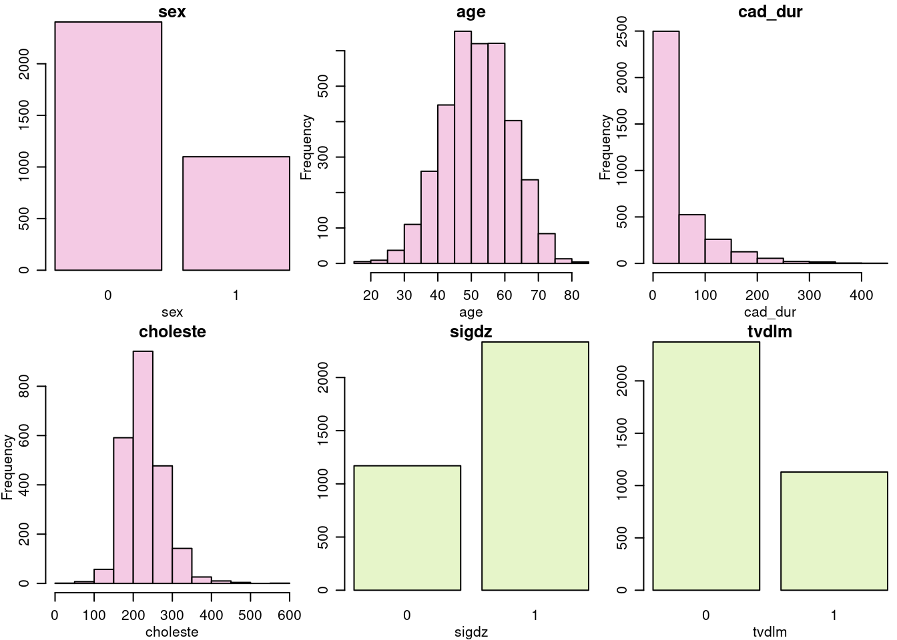
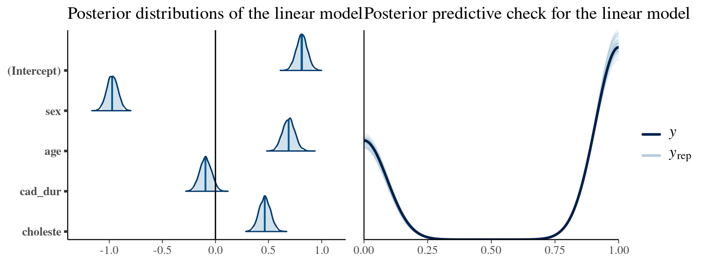
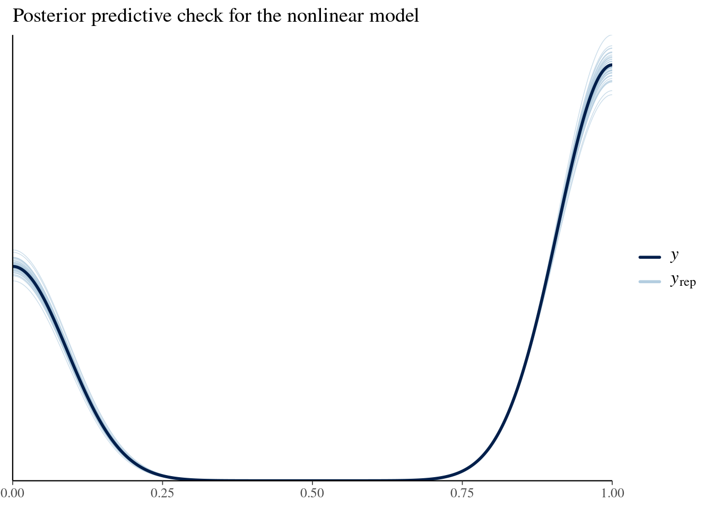

Skipping install of 'medicaldata' from a github remote, the SHA1 (a73901fe) has not changed since last install.
Use `force = TRUE` to force installation
library(medicaldata)library(dplyr)
Attaching package: 'dplyr'
The following objects are masked from 'package:stats':
filter, lag
The following objects are masked from 'package:base':
intersect, setdiff, setequal, union
library(brms)
Loading required package: Rcpp
Loading 'brms' package (version 2.20.4). Useful instructions
can be found by typing help('brms'). A more detailed introduction
to the package is available through vignette('brms_overview').
Attaching package: 'brms'
The following object is masked from 'package:stats':
ar
library(corrplot)
corrplot 0.92 loaded
library(rstanarm)
This is rstanarm version 2.26.1
- See https://mc-stan.org/rstanarm/articles/priors for changes to default priors!
- Default priors may change, so it's safest to specify priors, even if equivalent to the defaults.
- For execution on a local, multicore CPU with excess RAM we recommend calling
options(mc.cores = parallel::detectCores())
Attaching package: 'rstanarm'
The following objects are masked from 'package:brms':
dirichlet, exponential, get_y, lasso, ngrps
library(ggplot2)library(loo)
This is loo version 2.6.0
- Online documentation and vignettes at mc-stan.org/loo
- As of v2.0.0 loo defaults to 1 core but we recommend using as many as possible. Use the 'cores' argument or set options(mc.cores = NUM_CORES) for an entire session.
library(rstanarm)library(caret)
Loading required package: lattice
Attaching package: 'caret'
The following objects are masked from 'package:rstanarm':
compare_models, R2
library(splines)library(MASS)
Attaching package: 'MASS'
The following object is masked from 'package:dplyr':
select
# library(RColorBrewer)library(gridExtra)
Attaching package: 'gridExtra'
The following object is masked from 'package:dplyr':
combine
library(grid)library(knitr)seed =1234
Import the data:
cath <- medicaldata::cath
Introduction
Cardiovascular diseases, particularly coronary artery disease (CAD), remain a leading cause of mortality worldwide. In the pursuit of effective diagnosis and intervention, cardiac catheterization has emerged as a procedure for evaluating and addressing coronary artery health.
A reduction in artery diameter by at least 75% is considered a significant reduction in blood flow that puts downstream heart muscle at risk of ischemia. Such a reduction is defined as significant coronary disease. This report explores the complexities surrounding the cardiac catheterization process, with a specific focus on predicting the presence of significant coronary disease through the utilization of Bayesian models.
Duke University Medical Center’s Cardiovascular Disease Databank provides a data set containing information about patients that has been diagnosed at Duke University Medical Center. The patients where referred to Duke for chest pain and diagnosed accordingly. If the patient was diagnosed with significant coronary disease, the blockade can be of either all three of the coronary vessels, or only of the left main coronary artery. Both conditions are associated with a high risk for mortality.
The scope of this report is to implement two Bayesian models able to predict the probability of significant coronary disease among patients. The two models are based on Bayesian logistic regression, but one is linear and one is non-linear. After implementation the models are evaluated and compared to achieve the best possible result.
In section 2 the data used in this report is described. Section 3 explains the choice of mathematical model used in this report. In section 4 the two Stan models are implemented. Section 5 evaluates and compares the implemented models. Section 6 & 7 includes a final discussion and a reflection on the lessons learned during the project.
Data Desctription
The “cath” dataset used in this report is obtained from Duke University Cardiovascular Disease Databank. It encapsulates a collection of 6 variables (@Data-table) that are closely related to cardiovascular health.
TBD
sex
age
cad_dur
choleste
sigdz
tvdlm
0
73
132
268
1
1
0
68
85
120
1
1
0
54
45
NA
1
0
1
58
86
245
0
0
1
56
7
269
0
0
0
64
0
NA
1
0
The dataset consists of four explanatory variables (sex, age, cad_dur, choleste) and two response variables (sigdz, tvdlm) that provide an overview on patient demographics, clinical indicators, and critical outcomes related to coronary artery disease:
Sex (sex): Categorized as 0 for male and 1 for female, this variable represents the gender distribution within our dataset.
Age (age): Representing the age of patients in years, this variable serves as a demographic feature.
Chest Pain Duration (cad_dur): The duration of chest pain symptoms in days.
Serum Cholesterol Level (choleste): Measured in milligrams per deciliter, serum cholesterol levels are indicative of lipid metabolism and play a crucial role in cardiovascular health.
Significant Coronary Disease (sigdz): A binary variable that captures the presence (1) or absence (0) of at least 75% blockage in one of the major coronary arteries.
Three Vessel Disease or Left Main Disease (tvdlm): Denoting the presence (1) or absence (0) of blockage in either all three coronary vessels or in the left main coronary artery.
The univariate distributions of these variables are visualized in @Univariate-analysis.

TBD 1
While constructing the Bayesian models to predict the probaility of significant coronary disease, the report strives to utilize the correlation between the explanatory variables (sex, age, cad_dur, choleste) and the desired response variable (sigdz). The tvdlm variable is not relevant in this report as the main focus is to predict the probability of significant coronary disease, independent of the type of the blockade.
Before the analysis, the data is preprocessed by removing tvdlm column and all rows that contain missing values, as well as by scaling the continuous variables to zero mean and unit variance. After this, we are left with \(n =\) 2258 observations. The pairwise correlations of variables are visualized in @Bivariate-analysis. We can see that variables sex and age have the most significant bivariate correlation to the responsive variable sigdz.
TBD 3
Mathematical Model
In this analysis, we will construct two models for inferring the binary response variable, sigdz based on input explanatory variables. The first model is a generalized linear model (GLM), namely Bayesian logistic regression. The other model is a generalized additive mixed model (GAMM), which implements Bayesian logistic regression with nonlinear transformations on the input variables. These models will be referred as linear and nonlinear model, respectively.
(((To-be-done still: - Check likelihood notation for nonlinear model - Prior justification - Check prior notations - Include priors with own values ? - Posteriors ?)))
The generalized linear model and priors
Let \(y\) be the number of times the variable sigdz is realized to be 1 for one individual in the dataset, and let \(x\) be the explanatory variables for this outcome. Then, this number of successes for one individual follows a Binomial distribution
\[
y \sim \binom{n}{y}\theta^y(1-\theta)^{n-y},
\]
where n is the number of observations for that specific individual and \(\theta = g^{-1}(\eta)\)\((\eta = \alpha + x^{T} \beta)\) is the probability of success (patient presenting with significant coronary disease). The inverse link function \(g^{-1}\) maps the output of the linear predictor \(\eta\) to a probability interval between 0 and 1.
For the binomial GLM, this project utilizes logit \(g(x) = \ln(\frac{x}{1-x})\) as a link function, which makes it a logistic regression model. As each individual occurs only once in the data, \(y\) can be directly presented as the binary response variable. Therefore, the likelihood of the response variable of one individual is reduced to Bernoulli distribution
\[
y \sim \text{ logit}^{-1}(\eta)^y(1-\text{ logit}^{-1}(\eta))^{1-y}.
\]
The complete data likelihood is then a product of \(n =\) 2258 likelihoods, with unshared probability of success.
As in Bayesian logistic regression the scope is to infer the distribution of the regression weights, namely the intercept \(\alpha\) and coefficients \(\beta = [\beta_1, \beta_2, \beta_3, \beta_4]^T\), we define the prior to be Student’s \(t\)-distribution
where \(v\) is the degrees of freedom, \(\mu\) is the location and \(\sigma\) is the scale.
The selection of prior distribution was done based on the nature of the data. Due to correlations, there is reason to believe that the parameters are not very close to zero, but most are still rather small than large. Therefore, as Student’s \(t\)-distribution has heavy tails and larger scale compared to, for example, Gaussian distribution, \(t\)-distribution is a suitable choice of prior for this purpose. The parameters of the prior were defined to be
\[
v = 3, \quad \mu = 0, \quad \sigma = 2.5,
\]
as the coefficients can be positive or negative.
Finally, the joint posterior distribution that is simulated using Hamiltonian Monte Carlo (HMC) is proportional to the product of likelihood and prior distributions:
The additive nonlinear model on the other hand, is a generalized additive mixed model which combines multiple functions in a way that is not strictly linear. This allows for a more flexible relationship between the explanatory variables and response variable \(y\). In this report, the nonlinear model uses the same link function as the linear model, and so the nonlinear predictor for the logistic regression model can be written as:
where \(f_k\) are nonlinear functions that transform the explanatory features individually. In this report, all functions of the continuous variables are smoothing functions. The \(f_{age}\) is simply the variable itself, due to sex being binary variable. The smoothing functions utilize penalized splines, allowing the model to create a curved relationship between the features. The shape of the smoothing functions is estimated from the data and the penalty helps avoid overfitting. The smoothing function works by minimizing the sum of the model fit with the smoothness / penalty (here, thin plate regression splines (default)).
The likelihood of observation is the same as with the linear model, with the difference that a nonlinear transformation is applied to all input explanatory variables \(\textbf{x}\). Additionally, we utilize the same prior in both models to make them as comparable as possible. The posterior is again similar as with the linear model, but with the difference of nonlinear transformations on the input data.
Model Definitions and Implementation
The linear and nonlinear models are implemented as Stan code with the rstanarm package as described below. Both models were implemented with identical number of chains, draws and warm-up. The default values (chains = 4, draws = 4000, and warmup = 2000) were used in both cases.
Linear model
The linear model was implemented with the help of the stan_glm function from the rstanarm package. stan_glm is used to fit generalized linear models and performs a full Bayesian estimation with Markov Chain Monte Carlo (MCMC) estimation instead of maximum likelihood estimation and by adding priors to the GLM coefficients and intercept. By defining the model parameter family = binomial(link = 'logit') the model performs logistic regression.
The linear relationship between the response variable sigdz and the explanatory variables are defined with the help of the formula function and the prior for the regression coefficients and intercept with the help of the student_t function.
# Make response variable a factorcath$sigdz <-as.factor(cath$sigdz)y <- cath$sigdz# Formulaformula_linear <-formula(sigdz ~ sex + age + cad_dur + choleste)# Priorprior_linear <-student_t(df =3, location =0, scale =2.5)# The modelmodel_linear <-stan_glm(formula_linear, data = cath,family =binomial(link ="logit"), prior = prior_linear, prior_intercept = prior_linear,QR=TRUE, refresh=0)# saveRDS(model_linear, file = "./additional_files/model_linear.rds")# model_linear <- readRDS("./additional_files/model_linear.rds")
Nonlinear model
The nonlinear model is similarly implemented utilizing stan_gamm4 function from the rstanarm package and defined to be a logistic regression model with the help of the model parameter family = binomial(link = 'logit'). stan_gamm4 fits a generalized additive mixed model, and performs Bayesian MCMC estimation instead of maximum likelihood estimation. In the same way as stan_glm, the model adds independent priors to the regression coefficients and intercept.
The nonlinear relationship between the response variable sigdz and the explanatory variables is again defined with the help of the formula function. This time, passing the smoothing function s() for all continuous explanatory variables, to allow for more complexity in the model, while simultaneously penalizing over-fitting of the model with the the thin plate regression splines smoothness.
The same priors are used as for the linear model for both the intercept and the regression coefficients.
# Formulaformula_nonlinear <-formula(sigdz ~ sex +s(age) +s(cad_dur) +s(choleste))# Model definitionmodel_nonlinear <-stan_gamm4( formula_nonlinear, data = cath,family =binomial(link ="logit"),prior = prior_linear, prior_intercept = prior_linear,refresh =0)# saveRDS(model_nonlinear, file = "./additional_files/model_nonlinear.rds")# model_nonlinear <- readRDS("./additional_files/model_nonlinear.rds")
Model Evaluation
After fitting the models, multiple evaluation metrics such as split-\(\hat{R}\), effective sample size (ESS) and number of divergent transitions were used to assess the convergence of MCMC chains separately for each model. Additionally, we perform posterior predictive checks, assess the model performances as well as compare the models utilizing leave-one-out cross validation (LOO-CV). Finally, we perform prior sensitivity analysis for both models.
For the linear model, the posterior predictive check and posterior distributions of the parameters with 95 % credible interval are visualized in @linear-model-pp-check. As we can see, the model fits the data relatively well, with a bit of a variation around the probability interval endpoints.

TBD
The convergence diagnostics for the linear model are summarized below.
Split-Rhat:
(Intercept) sex age cad_dur choleste
1.001 1.000 0.999 1.000 1.000
mean_PPD log-posterior
1.000 1.001
Number of divergent transitions: 0
ESS ratio:
(Intercept) sex age cad_dur choleste
1.24450 1.17625 1.31075 1.33050 1.32150
Sd of ESS ratio: 0.066
The HMC chains have converged, as all split-\(\hat{R}\) values are below 0.01. Additionally, there were no divergent transitions during convergence, and thus the HMC simulation is reliable. The ratio of the ESS to the true sample size is over 1 with all explanatory variables as well as the intercept. Although high ESS is generally a good thing, this also implies the MCMC samples may have a negative correlation.
For the nonlinear model, the posterior predictive check is visualized in @nonlinear-model-pp-check. Based on visual inspection, the nonlinear model fits the data as well as the linear model. Like with the linear model, the posterior has a bit of a variation around the probability interval endpoints.

TBD
The convergence diagnostics for the nonlinear model are summarized below.
Also the MCMC chains for this model have converged, as the split-\(\hat{R}\) is less than 0.01 for all coefficients. As with the linear model, there were no divergent transitions during convergence, and thus the HMC simulation is reliable. On the other hand, the ESS ratio is on average less than 1, so a bit lower than with the linear model. However, the standard deviation of the ESS ratios is over twice larger than with the linear model. Low ESS ratio is not good in the model sense, but nevertheless the nonlinear has multiple coefficients to balance out the overall effect.
Model comparison using LOO-CV
To compare the performance of the linear model and nonlinear model to each other as well as to a baseline model, we will compute the expected log-densities of the predictive distributions (ELPD) by applying Pareto smoothed LOO-CV (PSIS-LOO) to the models. The baseline model is simply a logistic regression model without any explanatory variables and with a unit coefficient.
# Baseline modelmodel_baseline <-update(model_linear, formula = sigdz ~1, QR =FALSE)
The results of the PSIS-LOO for each model are presented below.
Linear model:
Computed from 4000 by 2258 log-likelihood matrix
Estimate SE
elpd_loo -1177.4 24.4
p_loo 5.1 0.2
looic 2354.7 48.8
------
Monte Carlo SE of elpd_loo is 0.0.
All Pareto k estimates are good (k < 0.5).
See help('pareto-k-diagnostic') for details.
Nonlinear model:
Computed from 4000 by 2258 log-likelihood matrix
Estimate SE
elpd_loo -1170.5 24.3
p_loo 11.5 0.7
looic 2340.9 48.7
------
Monte Carlo SE of elpd_loo is 0.1.
Pareto k diagnostic values:
Count Pct. Min. n_eff
(-Inf, 0.5] (good) 2257 100.0% 1513
(0.5, 0.7] (ok) 1 0.0% 2146
(0.7, 1] (bad) 0 0.0% <NA>
(1, Inf) (very bad) 0 0.0% <NA>
All Pareto k estimates are ok (k < 0.7).
See help('pareto-k-diagnostic') for details.
Baseline model:
Computed from 4000 by 2258 log-likelihood matrix
Estimate SE
elpd_loo -1448.7 14.9
p_loo 1.0 0.0
looic 2897.3 29.9
------
Monte Carlo SE of elpd_loo is 0.0.
All Pareto k estimates are good (k < 0.5).
See help('pareto-k-diagnostic') for details.
For each model, all Pareto k estimates are < 0.5, which implies the importance sampling gives a reliable estimate on the computed ELPDs. Additionally, for linear and nonlinear model the p_loo is less than the number of parameters in the respective model, and thus the model specifications seem to be reasonable.
To assess the model ELPDs with respect to each other, we compute the comparison between the results of PSIS-LOO:
It indeed seems that the predictive performances of both linear and nonlinear models are better compared to the baseline model. Additionally, the scale of the difference of standard errors (se_diff) of the baseline model and nonlinear model is smaller than the difference of the ELPDs of the nonlinear and baseline model, which implies the difference in predictive log-densities between these models is not simply explained by the variance. Although the difference in ELPDs of the linear and nonlinear models is small, the nonlinear model slightly outperforms the linear model.
To estimate the generalization error, i.e. the generalization and performance of models on unseen data, we compute LOO-balanced classification accuracies for the linear and nonlinear models. The results are summarized in @Classification-accuracies. The classification accuracy is simply the fraction of correctly classified observations. The balanced classification accuracy on the other hand takes into account true positive rate (sensitivity) and true negative rate (specificity). The latter accounts for the imbalance in our data and is therefore more accurate estimate on the generalization error. Estimating generalization error is highly important for practical usage of the model, as it would be centered around predicting
TBD
classification_accuracy
balanced_classification_accuracy
linear_model
0.75
0.69
nonlinear_model
0.76
0.69
We can see that the performances of both models are nearly equal. The classification accuracy is slightly better for the nonlinear model, but the balanced accuracy is the same for both models. The the balanced classification accuracy is not very high, but nevertheless, both models outperform a random classifier.
To further compare the predictive performances of the models, calibration plots of both linear and nonlinear models are visualized in @Calibration-plots. From these plots we can see that both models are calibrated on approximately the interval of [0.25, 0.5] of predicted probabilities. For the top 10% there are more predictions than observations, and for the bottom 20% there are more observations than predictions.
Warning: There were 2 divergent transitions after warmup. See
https://mc-stan.org/misc/warnings.html#divergent-transitions-after-warmup
to find out why this is a problem and how to eliminate them.
Warning: Examine the pairs() plot to diagnose sampling problems
The scope of this report was to implement two Bayesian models able to predict the probability of significant coronary disease among patients. The models were implemented Bayesian logistic regression with both a linear and a non-linear approach. The results were two Stan models of equal classification accuracy.
With classification accuracies of 0.75 (linear) and 0.76 (non-linear), both models performed adequately when it came to predicting the pervalance of significant coronary disease. The results indicate that both models outperform the baseline model, with the nonlinear model slightly surpassing the linear model in terms of predictive performance.
There is still room for improvement when it comes to the predictive performance of the models. The problem here may lie in the explanatory variables being to general when it comes to predicting a certain diseases. To further improve the predictive performance of the model, new explanatory variables may have to be introduced. Family history, blood pressure, and smoking status are all possible explanatory variables closely related to cardiovascular health that could help improve model performance.
In conclusion,
Lessons Learned
References
Source Code
---title: "PROJECT"subtitle: "BLAL BLA BLA"author: anonymousformat: html: toc: true code-tools: true code-line-numbers: true msainfont: Georgia, serif page-layout: article pdf: number-sections: true code-annotations: noneeditor: source---::: {.content-hidden when-format="pdf"}::: {.callout-warning collapse="false"}## SetupInstall packages:```{r}#| label: Setupremotes::install_github("higgi13425/medicaldata")library(medicaldata)library(dplyr)library(brms)library(corrplot)library(rstanarm)library(ggplot2)library(loo)library(rstanarm)library(caret)library(splines)library(MASS)# library(RColorBrewer)library(gridExtra)library(grid)library(knitr)seed =1234```Import the data:```{r}#| label: Importing-datacath <- medicaldata::cath```::::::# IntroductionCardiovascular diseases, particularly coronary artery disease (CAD), remain a leading cause of mortality worldwide. In the pursuit of effective diagnosis and intervention, cardiac catheterization has emerged as a procedure for evaluating and addressing coronary artery health. A reduction in artery diameter by at least 75% is considered a significant reduction in blood flow that puts downstream heart muscle at risk of ischemia. Such a reduction is defined as significant coronary disease.This report explores the complexities surrounding the cardiac catheterization process, with a specific focus on predicting the presence of significant coronary disease through the utilization of Bayesian models.Duke University Medical Center's Cardiovascular Disease Databank provides a data set containing information about patients that has been diagnosed at Duke University Medical Center. The patients where referred to Duke for chest painand diagnosed accordingly. If the patient was diagnosed with significant coronary disease, the blockade can be of eitherall three of the coronary vessels, or only of the left main coronary artery. Both conditions are associated with a high risk for mortality. The scope of this report is to implement two Bayesian models able to predict the probability of significant coronary disease among patients. The two models are based on Bayesian logistic regression, but one is linear and one is non-linear.After implementation the models are evaluated and compared to achieve the best possible result.In section 2 the data used in this report is described. Section 3 explains the choice of mathematical model used in this report. In section 4 the two Stan models are implemented. Section 5 evaluates and compares the implemented models. Section 6 & 7 includes a final discussion and a reflection on the lessons learned during the project.# Data DesctriptionThe "cath" dataset used in this report is obtained from Duke University Cardiovascular Disease Databank. It encapsulates a collection of 6 variables (@Data-table) that are closely related to cardiovascular health.```{r}#| label: Data-table#| echo: false#| message: false#| warning: false#| tbl-cap: TBDkable(head(cath))```The dataset consists of four explanatory variables (*sex*, *age*, *cad_dur*, *choleste*) and two response variables (*sigdz*, *tvdlm*) that provide an overview on patient demographics, clinical indicators, and critical outcomes related to coronary artery disease:- **Sex** (*sex*): Categorized as 0 for male and 1 for female, this variable represents the gender distribution within our dataset.- **Age** (*age*): Representing the age of patients in years, this variable serves as a demographic feature.- **Chest Pain Duration** (*cad_dur*): The duration of chest pain symptoms in days.- **Serum Cholesterol Level** (*choleste*): Measured in milligrams per deciliter, serum cholesterol levels are indicative of lipid metabolism and play a crucial role in cardiovascular health.- **Significant Coronary Disease** (*sigdz*): A binary variable that captures the presence (1) or absence (0) of at least 75% blockage in one of the major coronary arteries.- **Three Vessel Disease or Left Main Disease** (*tvdlm*): Denoting the presence (1) or absence (0) of blockage in either all three coronary vessels or in the left main coronary artery.The univariate distributions of these variables are visualized in @Univariate-analysis.```{r}#| label: Univariate-analysis#| echo: false#| fig-cap: TBD 1#| fig-show: asispar(mfrow =c(2,3), mgp =c(1.8,0.8,0), omi =c(0,0,0,0), mar =c(2.8,2.7,1.3,0))variable_names =names(cath)colors =c("#F4CAE4", "#E6F5C9")# Explanatory variablesbarplot(table(cath[,1]), main = variable_names[1], xlab = variable_names[1], col = colors[1])for(i in2:4){hist(cath[[i]], main = variable_names[i], xlab = variable_names[i], col = colors[1])}# Response variablesfor(i in5:6){barplot(table(cath[,i]), main = variable_names[i], xlab = variable_names[i], col = colors[2])}```While constructing the Bayesian models to predict the probaility of significant coronary disease, the report strives to utilize the correlation between the explanatory variables (*sex*, *age*, *cad_dur*, *choleste*) and the desired response variable (*sigdz*). The *tvdlm* variable is not relevant in this report as the main focus is to predict the probability of significant coronary disease, independent of the type of the blockade.```{r}#| label: Data-preprocessing#| echo: false#| warning: false#| message: false# Remove tvdlm column# Remove rows with at least one NA valuecath <- cath %>%na.omit() %>% dplyr::select(-tvdlm)# Scale the variablesfor (i in1:(ncol(cath)-1)){ cath[i] <-scale(cath[i])}# Dimensions after preprocessingcath_dims <-dim(cath)n_obs <- cath_dims[1]```Before the analysis, the data is preprocessed by removing *tvdlm* column and all rows that contain missing values, as well as by scaling the continuous variables to zero mean and unit variance. After this, we are left with $n =$ `r n_obs` observations. The pairwise correlations of variables are visualized in @Bivariate-analysis. We can see that variables *sex* and *age* have the most significant bivariate correlation to the responsive variable *sigdz*.```{r}#| label: Bivariate-analysis#| echo: false#| fig-cap: TBD 3#| fig-show: asis#| fig-width: 3#| fig-height: 3par(mfrow=c(1,1))p <-ncol(cath)corrplot(cor(cath[, c(p,1:(p-1))]), type ="full", method ="number")```# Mathematical ModelIn this analysis, we will construct two models for inferring the binary response variable, *sigdz* based on input explanatory variables*.* The first model is a generalized linear model (GLM), namely Bayesian logistic regression. The other model is a generalized additive mixed model (GAMM), which implements Bayesian logistic regression with nonlinear transformations on the input variables. These models will be referred as linear and nonlinear model, respectively.(((To-be-done still: - Check likelihood notation for nonlinear model - Prior justification - Check prior notations - Include priors with own values ? - **Posteriors** ?)))## The generalized linear model and priorsLet $y$ be the number of times the variable *sigdz* is realized to be 1 for one individual in the dataset, and let $x$ be the explanatory variables for this outcome. Then, this number of successes for one individual follows a Binomial distribution$$y \sim \binom{n}{y}\theta^y(1-\theta)^{n-y},$$where n is the number of observations for that specific individual and $\theta = g^{-1}(\eta)$ $(\eta = \alpha + x^{T} \beta)$ is the probability of success (patient presenting with significant coronary disease). The inverse link function $g^{-1}$ maps the output of the linear predictor $\eta$ to a probability interval between 0 and 1.For the binomial GLM, this project utilizes logit $g(x) = \ln(\frac{x}{1-x})$ as a link function, which makes it a logistic regression model. As each individual occurs only once in the data, $y$ can be directly presented as the binary response variable. Therefore, the likelihood of the response variable of one individual is reduced to Bernoulli distribution$$y \sim \text{ logit}^{-1}(\eta)^y(1-\text{ logit}^{-1}(\eta))^{1-y}.$$The complete data likelihood is then a product of $n =$ `r n_obs` likelihoods, with unshared probability of success.As in Bayesian logistic regression the scope is to infer the distribution of the regression weights, namely the intercept $\alpha$ and coefficients $\beta = [\beta_1, \beta_2, \beta_3, \beta_4]^T$, we define the prior to be Student's $t$-distribution$$\begin{aligned} \alpha &\sim t_v(\mu, \sigma) \\\beta_k &\sim t_v(\mu, \sigma), \ k=1,..,4 \\\end{aligned} $$where $v$ is the degrees of freedom, $\mu$ is the location and $\sigma$ is the scale.The selection of prior distribution was done based on the nature of the data. Due to correlations, there is reason to believe that the parameters are not very close to zero, but most are still rather small than large. Therefore, as Student's $t$-distribution has heavy tails and larger scale compared to, for example, Gaussian distribution, $t$-distribution is a suitable choice of prior for this purpose. The parameters of the prior were defined to be$$v = 3, \quad \mu = 0, \quad \sigma = 2.5,$$as the coefficients can be positive or negative.Finally, the joint posterior distribution that is simulated using Hamiltonian Monte Carlo (HMC) is proportional to the product of likelihood and prior distributions:$$p(\alpha, \beta | \textbf{x}, \textbf{y} ) \propto t_v(\alpha | \mu, \sigma) \times \prod^4_{k=1} t_v(\beta_k | \mu, \sigma) \times \prod^n_{i=1} \text{ logit}^{-1}(\eta_i)^{y_i}(1-\text{ logit}^{-1}(\eta_i))^{1-y_i}$$## The generalized additive nonlinear modelThe additive nonlinear model on the other hand, is a generalized additive mixed model which combines multiple functions in a way that is not strictly linear. This allows for a more flexible relationship between the explanatory variables and response variable $y$. In this report, the nonlinear model uses the same link function as the linear model, and so the nonlinear predictor for the logistic regression model can be written as:$$\text{logit} (\theta) = \eta = \alpha + \sum^4_{k=1} \beta_k f_k(x_k),$$where $f_k$ are nonlinear functions that transform the explanatory features individually. In this report, all functions of the continuous variables are smoothing functions. The $f_{age}$ is simply the variable itself, due to *sex* being binary variable. The smoothing functions utilize penalized splines, allowing the model to create a curved relationship between the features. The shape of the smoothing functions is estimated from the data and the penalty helps avoid overfitting. The smoothing function works by minimizing the sum of the model fit with the smoothness / penalty (here, thin plate regression splines (default)).The likelihood of observation is the same as with the linear model, with the difference that a nonlinear transformation is applied to all input explanatory variables $\textbf{x}$. Additionally, we utilize the same prior in both models to make them as comparable as possible. The posterior is again similar as with the linear model, but with the difference of nonlinear transformations on the input data.# Model Definitions and ImplementationThe linear and nonlinear models are implemented as Stan code with the rstanarm package as described below. Both models were implemented with identical number of chains, draws and warm-up. The default values (chains = 4, draws = 4000, and warmup = 2000) were used in both cases.## Linear modelThe linear model was implemented with the help of the `stan_glm` function from the rstanarm package. `stan_glm` is used to fit generalized linear models and performs a full Bayesian estimation with Markov Chain Monte Carlo (MCMC) estimation instead of maximum likelihood estimation and by adding priors to the GLM coefficients and intercept. By defining the model parameter `family = binomial(link = 'logit')` the model performs logistic regression.The linear relationship between the response variable `sigdz` and the explanatory variables are defined with the help of the `formula` function and the prior for the regression coefficients and intercept with the help of the `student_t` function.```{r}#| label: Linear-model-definition#| warning: false#| message: false# Make response variable a factorcath$sigdz <-as.factor(cath$sigdz)y <- cath$sigdz# Formulaformula_linear <-formula(sigdz ~ sex + age + cad_dur + choleste)# Priorprior_linear <-student_t(df =3, location =0, scale =2.5)# The modelmodel_linear <-stan_glm(formula_linear, data = cath,family =binomial(link ="logit"), prior = prior_linear, prior_intercept = prior_linear,QR=TRUE, refresh=0)# saveRDS(model_linear, file = "./additional_files/model_linear.rds")# model_linear <- readRDS("./additional_files/model_linear.rds") ```## Nonlinear modelThe nonlinear model is similarly implemented utilizing `stan_gamm4` function from the rstanarm package and defined to be a logistic regression model with the help of the model parameter `family = binomial(link = 'logit')`. `stan_gamm4` fits a generalized additive mixed model, and performs Bayesian MCMC estimation instead of maximum likelihood estimation. In the same way as `stan_glm`, the model adds independent priors to the regression coefficients and intercept.The nonlinear relationship between the response variable `sigdz` and the explanatory variables is again defined with the help of the `formula` function. This time, passing the smoothing function `s()` for all continuous explanatory variables, to allow for more complexity in the model, while simultaneously penalizing over-fitting of the model with the the thin plate regression splines smoothness.The same priors are used as for the linear model for both the intercept and the regression coefficients.```{r}#| label: Nonlinear model definition#| warning: false#| message: false# Formulaformula_nonlinear <-formula(sigdz ~ sex +s(age) +s(cad_dur) +s(choleste))# Model definitionmodel_nonlinear <-stan_gamm4( formula_nonlinear, data = cath,family =binomial(link ="logit"),prior = prior_linear, prior_intercept = prior_linear,refresh =0)# saveRDS(model_nonlinear, file = "./additional_files/model_nonlinear.rds")# model_nonlinear <- readRDS("./additional_files/model_nonlinear.rds")```# Model EvaluationAfter fitting the models, multiple evaluation metrics such as split-$\hat{R}$, effective sample size (ESS) and number of divergent transitions were used to assess the convergence of MCMC chains separately for each model. Additionally, we perform posterior predictive checks, assess the model performances as well as compare the models utilizing leave-one-out cross validation (LOO-CV). Finally, we perform prior sensitivity analysis for both models.- Rhat, ESS, HMC divergences, pp_check(), loo_compare(), classification accuracy- Prior sensitivity analysis## Convergence diagnostics & posterior predictive checksFor the linear model, the posterior predictive check and posterior distributions of the parameters with 95 % credible interval are visualized in @linear-model-pp-check. As we can see, the model fits the data relatively well, with a bit of a variation around the probability interval endpoints.```{r}#| label: linear-model-pp-check#| fig-cap: TBD#| fig-show: asis#| echo: false#| fig-height: 3#| fig-width: 8# posteriorspplot_linear <-plot(model_linear, "areas", prob =0.95, prob_outer =1) +geom_vline(xintercept =0) +labs(title="Posterior distributions of the linear model")# pp checkpp_check_linear <- brms::pp_check(model_linear) +labs(title="Posterior predictive check for the linear model")grid.arrange(pplot_linear, pp_check_linear, ncol=2) ```The convergence diagnostics for the linear model are summarized below.```{r}#| label: Linear-model-convergence-diagnostics#| echo: falseRhat_linear <- model_linear$stan_summary[, "Rhat"] %>%round(3)np_linear <-nuts_params(model_linear)divergents_linear <-sum(subset(np_linear, Parameter =="divergent__")$Value)ess_ratio_linear <-neff_ratio(model_linear)sd_ess_ratio_linear <-sd(ess_ratio_linear) %>%round(3)cat("Split-Rhat:\n")print(Rhat_linear)cat("Number of divergent transitions: ", divergents_linear, "\n")cat("ESS ratio: \n")print(ess_ratio_linear)cat("Sd of ESS ratio: ", sd_ess_ratio_linear)```The HMC chains have converged, as all split-$\hat{R}$ values are below 0.01. Additionally, there were no divergent transitions during convergence, and thus the HMC simulation is reliable. The ratio of the ESS to the true sample size is over 1 with all explanatory variables as well as the intercept. Although high ESS is generally a good thing, this also implies the MCMC samples may have a negative correlation.For the nonlinear model, the posterior predictive check is visualized in @nonlinear-model-pp-check. Based on visual inspection, the nonlinear model fits the data as well as the linear model. Like with the linear model, the posterior has a bit of a variation around the probability interval endpoints.```{r}#| label: nonlinear-model-pp-check#| fig-cap: TBD#| fig-show: asis#| echo: false# pp checkbrms::pp_check(model_nonlinear) +labs(title="Posterior predictive check for the nonlinear model")```The convergence diagnostics for the nonlinear model are summarized below.```{r}#| label: Nonlinear-model-Convergence-diagnostics#| echo: falseRhat_nonlinear <- model_nonlinear$stan_summary[, "Rhat"] %>%round(3)np_nonlinear <-nuts_params(model_nonlinear)divergents_nonlinear <-sum(subset(np_nonlinear, Parameter =="divergent__")$Value)ess_ratio_nonlinear <-neff_ratio(model_nonlinear) %>%round(3)rhat_satisfied_nonlinear <-all(Rhat_nonlinear <=1.01)mean_ess_ratio <-mean(ess_ratio_nonlinear) %>%round(3)sd_ess_ratio_nonlinear <-sd(ess_ratio_nonlinear) %>%round(3)cat("Split-Rhat of the first coefficients:\n")print(head(Rhat_nonlinear))cat("All split-Rhat <= 0.01: ", rhat_satisfied_nonlinear, "\n")cat("Number of divergent transitions: ",divergents_nonlinear, "\n")cat("ESS ratio of the first coefficients: \n")print(head(ess_ratio_nonlinear))cat("Mean of ESS ratio: ", mean_ess_ratio)cat("Sd of ESS ratio: ", sd_ess_ratio_nonlinear)```Also the MCMC chains for this model have converged, as the split-$\hat{R}$ is less than 0.01 for all coefficients. As with the linear model, there were no divergent transitions during convergence, and thus the HMC simulation is reliable. On the other hand, the ESS ratio is on average less than 1, so a bit lower than with the linear model. However, the standard deviation of the ESS ratios is over twice larger than with the linear model. Low ESS ratio is not good in the model sense, but nevertheless the nonlinear has multiple coefficients to balance out the overall effect.## Model comparison using LOO-CVTo compare the performance of the linear model and nonlinear model to each other as well as to a baseline model, we will compute the expected log-densities of the predictive distributions (ELPD) by applying Pareto smoothed LOO-CV (PSIS-LOO) to the models. The baseline model is simply a logistic regression model without any explanatory variables and with a unit coefficient.```{r}#| label: Baseline-model# Baseline modelmodel_baseline <-update(model_linear, formula = sigdz ~1, QR =FALSE)```The results of the PSIS-LOO for each model are presented below.```{r}#| label: Computing-LOOs#| echo: false#| warnings: false# LOO of our modelsloo_linear <-loo(model_linear, save_psis =TRUE)loo_nonlinear <-loo(model_nonlinear, save_psis =TRUE)# LOO of the baseline modelloo_baseline <-loo(model_baseline, save_psis =TRUE)``````{r}#| label: Printing-LOOs#| echo: falsecat("Linear model:")print(loo_linear)cat("Nonlinear model:")print(loo_nonlinear)cat("Baseline model:")print(loo_baseline)```For each model, all Pareto k estimates are \< 0.5, which implies the importance sampling gives a reliable estimate on the computed ELPDs. Additionally, for linear and nonlinear model the p_loo is less than the number of parameters in the respective model, and thus the model specifications seem to be reasonable.To assess the model ELPDs with respect to each other, we compute the comparison between the results of PSIS-LOO:```{r}#| label: Comparing LOOs#| echo: falseloo_compare(loo_linear, loo_nonlinear, loo_baseline)```It indeed seems that the predictive performances of both linear and nonlinear models are better compared to the baseline model. Additionally, the scale of the difference of standard errors (se_diff) of the baseline model and nonlinear model is smaller than the difference of the ELPDs of the nonlinear and baseline model, which implies the difference in predictive log-densities between these models is not simply explained by the variance. Although the difference in ELPDs of the linear and nonlinear models is small, the nonlinear model slightly outperforms the linear model.## Posterior predictive performance: Classification accuracyTo estimate the generalization error, i.e. the generalization and performance of models on unseen data, we compute LOO-balanced classification accuracies for the linear and nonlinear models. The results are summarized in @Classification-accuracies. The classification accuracy is simply the fraction of correctly classified observations. The balanced classification accuracy on the other hand takes into account true positive rate (sensitivity) and true negative rate (specificity). The latter accounts for the imbalance in our data and is therefore more accurate estimate on the generalization error. Estimating generalization error is highly important for practical usage of the model, as it would be centered around predicting```{r}#| label: Linear-model-Classification-accuracy#| echo: false## Predicted probabilitiespreds_linear <-posterior_epred(model_linear)# LOO predicted outcome probabilitiesploo_linear =E_loo(preds_linear, loo_linear$psis_object, type="mean", log_ratios =-log_lik(model_linear))$value# Classification accuracyaccuracy_linear <-xor(ploo_linear>0.5, as.integer(y==0)) %>%mean() %>%round(2)# Posterior balanced LOO classification accuracyFP_linear <-mean(xor(ploo_linear[y==0]>0.5,as.integer(y[y==0])))FN_linear <-mean(xor(ploo_linear[y==1]<0.5,as.integer(y[y==1])))balanced_accuracy_linear <-round((FP_linear + FN_linear)/2, 2)``````{r}#| label: Noninear-model-Classification-accuracy#| echo: false## Predicted probabilitiespreds_nonlinear <-posterior_epred(model_nonlinear)# LOO predicted outcome probabilitiesploo_nonlinear=E_loo(preds_nonlinear, loo_nonlinear$psis_object, type="mean", log_ratios =-log_lik(model_nonlinear))$value# Classification accuracyaccuracy_nonlinear <-xor(ploo_nonlinear>0.5,as.integer(y==0)) %>%mean() %>%round(2)# Posterior balanced LOO classification accuracyFP_nonlinear <-mean(xor(ploo_nonlinear[y==0]>0.5,as.integer(y[y==0])))FN_nonlinear <-mean(xor(ploo_nonlinear[y==1]<0.5,as.integer(y[y==1])))balanced_accuracy_nonlinear <-round((FP_nonlinear + FN_nonlinear)/2, 2)``````{r}#| label: Classification-accuracies#| echo: false#| tbl-cap: TBDaccuracies <-data.frame(classification_accuracy =c(accuracy_linear, accuracy_nonlinear),balanced_classification_accuracy =c(balanced_accuracy_linear, balanced_accuracy_nonlinear))rownames(accuracies) <-c("linear_model", "nonlinear_model")kable(accuracies)```We can see that the performances of both models are nearly equal. The classification accuracy is slightly better for the nonlinear model, but the balanced accuracy is the same for both models. The the balanced classification accuracy is not very high, but nevertheless, both models outperform a random classifier.To further compare the predictive performances of the models, calibration plots of both linear and nonlinear models are visualized in @Calibration-plots. From these plots we can see that both models are calibrated on approximately the interval of [0.25, 0.5] of predicted probabilities. For the top 10% there are more predictions than observations, and for the bottom 20% there are more observations than predictions.```{r}#| label: Calibration-plots#| fig-cap: TBD X#| fig-show: asis#| fig-width: 8#| fig-height: 3#| echo: falsecplot_linear <-ggplot(data =data.frame(loopred=ploo_linear,y=as.numeric(y)-1), aes(x=loopred, y=y)) +stat_smooth(method='glm', formula = y ~ns(x, 5), fullrange=TRUE, color="deeppink") +geom_abline(linetype ='dashed') +labs(x ="Predicted (LOO)",y ="Observed",title ="Linear model - Calibration plot") +geom_jitter(height=0.02, width=0, alpha=0.05) +scale_y_continuous(breaks=seq(0,1,by=0.1)) +xlim(c(0,1)) +theme_minimal()cplot_nonlinear <-ggplot(data =data.frame(loopred=ploo_nonlinear,y=as.numeric(y)-1), aes(x=loopred, y=y)) +stat_smooth(method='glm', formula = y ~ns(x, 5), fullrange=TRUE, color="deeppink") +geom_abline(linetype ='dashed') +labs(x ="Predicted (LOO)",y ="Observed",title ="Nonlinear model - Calibration plot") +geom_jitter(height=0.02, width=0, alpha=0.05) +scale_y_continuous(breaks=seq(0,1,by=0.1)) +xlim(c(0,1)) +theme_minimal() grid.arrange(cplot_linear, cplot_nonlinear, ncol=2)```## Prior sensitivity analysis```{r}#| label: Linear model - Prior sensititivy analysis#normal priornormal_prior <-normal(location =0, scale =NULL, autoscale =FALSE)linear_model_normal_prior <-stan_glm(formula_linear, data = cath,family =binomial(link ="logit"),prior = normal_prior, prior_intercept = normal_prior,QR=TRUE, refresh=0)#default priorlinear_model_default_prior <-stan_glm(formula_linear, data = cath,family =binomial(link ="logit"),QR=TRUE, refresh=0)#cauchy priorcauchy_prior <-cauchy(location =0, scale =NULL, autoscale =FALSE)linear_model_cauchy_prior <-stan_glm(formula_linear, data = cath,family =binomial(link ="logit"),prior = cauchy_prior, prior_intercept = cauchy_prior,QR=TRUE, refresh=0)#normal prior, large scale N(0, 100)normal_prior_sd <-normal(0, scale =100, autoscale =FALSE)linear_model_normal_sd <-stan_glm(formula_linear, data = cath,family =binomial(link ="logit"),prior = normal_prior_sd, prior_intercept = normal_prior_sd,QR=TRUE, refresh=0)#normal prior, large locationnormal_prior_loc <-normal(100, scale =2.5, autoscale =FALSE)linear_model_normal_loc <-stan_glm(formula_linear, data = cath,family =binomial(link ="logit"),prior = normal_prior_loc, prior_intercept = normal_prior_loc,QR=TRUE, refresh=0)#flat priorflat_prior <-NULLlinear_model_flat_prior <-stan_glm(formula_linear, data = cath,family =binomial(link ="logit"),prior = flat_prior, prior_intercept = flat_prior,QR=TRUE, refresh=0)```Plotting the posterior distribution for each prior:```{r}#| label: Linear model - Plotting prior sensititvy pplot_normal <-plot(linear_model_normal_prior, "areas", prob =0.95, prob_outer =1) +geom_vline(xintercept =0) +labs(title ="Normal prior")pplot_default <-plot(linear_model_default_prior, "areas", prob =0.95, prob_outer =1) +geom_vline(xintercept =0) +labs(title ="Default prior")pplot_cauchy <-plot(linear_model_cauchy_prior, "areas", prob =0.95, prob_outer =1) +geom_vline(xintercept =0) +labs(title ="Cauchy prior")# pplot_linear <- pplot_linear + geom_vline(xintercept = 0) + labs(title = "Model prior")pplot_normal_sd <-plot(linear_model_normal_sd, "areas", prob =0.95, prob_outer =1) +geom_vline(xintercept =0) +labs(title ="N(0, 100)")pplot_normal_loc <-plot(linear_model_normal_loc, "areas", prob =0.95, prob_outer =1) +geom_vline(xintercept =0) +labs(title ="N(100, 0)")pplot_flat <-plot(linear_model_flat_prior, "areas", prob =0.95, prob_outer =1) +geom_vline(xintercept =0) +labs(title ="flat prior")#put desired priors into heregrid.arrange(pplot_normal_sd, pplot_normal_loc, pplot_default, pplot_flat, ncol=2, nrow =2) ``````{r}#| label: Noninear model - Prior sensititivy analysis#normal priornonlinear_model_normal_prior <-stan_gamm4( formula_nonlinear, data = cath,family =binomial(link ="logit"),prior = normal_prior, prior_intercept = normal_prior,refresh =0)#default priornonlinear_model_default_prior <-stan_gamm4( formula_nonlinear, data = cath,family =binomial(link ="logit"),refresh =0)#cauchy priornonlinear_model_cauchy_prior <-stan_gamm4( formula_nonlinear, data = cath,family =binomial(link ="logit"),prior = cauchy_prior, prior_intercept = cauchy_prior,refresh =0)``````{r, fig.height=10}#| label: Nonlinear model - Plotting prior sensititivynonlinear_pplot_normal <-plot(nonlinear_model_normal_prior, "areas", prob =0.95, prob_outer =1) +geom_vline(xintercept =0) +labs(title ="Normal prior")nonlinear_pplot_default <-plot(nonlinear_model_default_prior, "areas", prob =0.95, prob_outer =1) +geom_vline(xintercept =0) +labs(title ="Default prior")nonlinear_pplot_cauchy <-plot(nonlinear_model_cauchy_prior, "areas", prob =0.95, prob_outer =1) +geom_vline(xintercept =0) +labs(title ="Cauchy prior")pplot_nonlinear <-plot(model_nonlinear, "areas", prob =0.95, prob_outer =1) +geom_vline(xintercept =0) +labs(title ="Model prior")grid.arrange(pplot_nonlinear, nonlinear_pplot_normal, nonlinear_pplot_default, nonlinear_pplot_cauchy, ncol=2, nrow =2) ``````{r}```# DiscussionThe scope of this report was to implement two Bayesian models able to predict the probability of significant coronary disease among patients. The models were implemented Bayesian logistic regression with both a linear and a non-linear approach. The results were two Stan models of equal classification accuracy. With classification accuracies of 0.75 (linear) and 0.76 (non-linear), both models performed adequately when it came to predicting the pervalance of significant coronary disease. The results indicate that both models outperform the baseline model, with the nonlinear model slightly surpassing the linear model in terms of predictive performance. There is still room for improvement when it comes to the predictive performance of the models. The problem here may lie in theexplanatory variables being to general when it comes to predicting a certain diseases. To further improve the predictive performanceof the model, new explanatory variables may have to be introduced. Family history, blood pressure, and smoking status are all possible explanatory variables closely related to cardiovascular health that could help improve model performance.In conclusion, # Lessons Learned# References